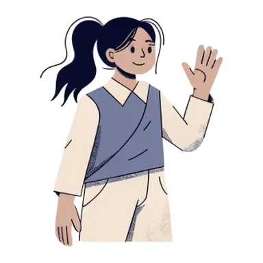
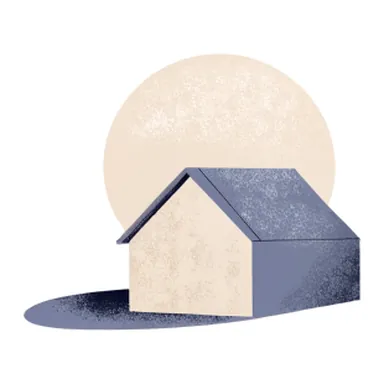
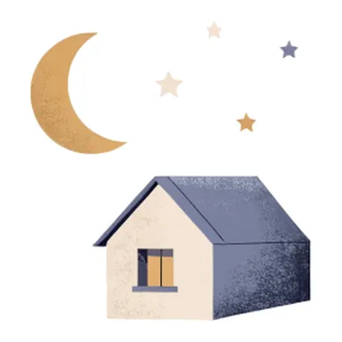
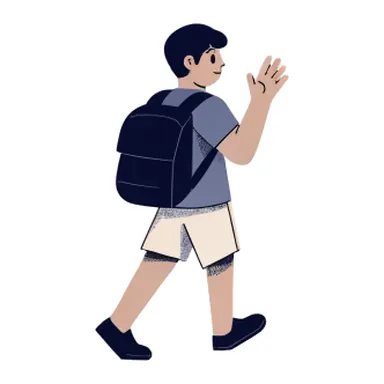
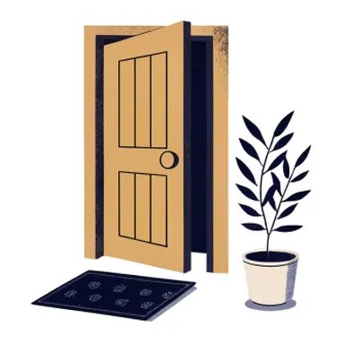

먼저 생각해 보세요.
두 사람은 지금 처음 만났어요. 이때 하지 않는 말은 무엇일까요?
Tschüss는 헤어질 때 하는 인사예요.

Yuna가 쾰른 본 공항에 도착했어요. 한 해 동안 같이 살 Emma가 마중을 나왔어요.
눌러서 들어 보세요.
먼저 생각해 보세요.
두 사람은 지금 처음 만났어요. 이때 하지 않는 말은 무엇일까요?
Tschüss는 헤어질 때 하는 인사예요.
문법 sein, heißen, kommen (ich, du), W-Fragen (Wie? Woher? Wer?), das Alphabet
이 과를 마치면 반 채팅방에 독일어로 첫 인사를 올릴 수 있어요.
쾰른 본 공항이에요. Emma와 Emma의 어머니가 Yuna를 마중 나왔어요.
들으면서 찾아보세요. Emma의 어머니 이름은 무엇인가요?
월요일 아침, Yuna가 새 교실에 들어왔어요.
들으면서 찾아보세요. Lukas는 어디에서 왔나요?
두 대화를 듣고 답하세요.
Emma: „Ich komme aus Korea.“
한국에서 온 사람은 Yuna예요.
Lukas: „Ich komme aus Köln.“
Sabine: „Ich bin Frau Wagner.“
Sabine Wagner는 Emma의 어머니예요.
Yuna는 어디에서 왔나요?
Frau Schneider는 누구인가요?
Lukas는 왜 Wie schreibt man das?라고 물었나요?
낱말 25개예요. 낱말이나 예문 앞의 단추를 누르면 소리가 나요. 명사는 der, die, das를 색으로 구분했어요.

Hallo! 안녕!, 안녕하세요!
Hallo, Emma!안녕, Emma!

Guten Morgen! 좋은 아침이에요! (아침 인사)
Guten Morgen, Frau Schneider!안녕하세요, Frau Schneider!
Guten Tag! 안녕하세요! (낮 인사)
Guten Tag, Herr Wagner!안녕하세요, Herr Wagner!

Guten Abend! 안녕하세요! (저녁 인사)
Guten Abend, Sabine!좋은 저녁이에요, Sabine!

Tschüss! 잘 가!, 안녕!
Tschüss, bis morgen!잘 가, 내일 봐!
Auf Wiedersehen! 안녕히 가세요!, 안녕히 계세요!
Auf Wiedersehen, Frau Schneider!안녕히 계세요, Frau Schneider!

Willkommen! 환영해요!
Willkommen in Köln!쾰른에 온 걸 환영해!
heißen 이름이 ~이다
Ich heiße Yuna.내 이름은 Yuna야.
sein ~이다
Ich bin Emma.나는 Emma야.
kommen 오다
Ich komme aus Korea.나는 한국에서 왔어.
der Name, die Namen 이름
Mein Name ist Yuna Kim.내 이름은 김유나예요.
wie 어떻게
Wie heißt du?너는 이름이 뭐야?
woher 어디에서
Woher kommst du?너는 어디에서 왔어?
wer 누구
Wer bist du?너는 누구야?
aus ~에서, ~ 출신
Ich komme aus Seoul.나는 서울에서 왔어.
Wie geht's? 어떻게 지내?
Hallo, Lukas! Wie geht's?안녕, Lukas! 어떻게 지내?
gut 좋은, 잘
Gut, danke. Und dir?잘 지내, 고마워. 너는?
danke 고마워, 고맙습니다
Danke, Emma!고마워, Emma!
bitte 부탁해요, 천만에요
Wie bitte?뭐라고?, 뭐라고요?
ja 네, 응
Ja, ich bin Yuna.응, 내가 Yuna야.
nein 아니요, 아니
Nein, ich komme aus Köln.아니, 나는 쾰른 출신이야.
Deutschland 독일
Köln ist in Deutschland.쾰른은 독일에 있어요.
Österreich 오스트리아
Wien ist in Österreich.빈은 오스트리아에 있어요.
die Schweiz 스위스
Zürich ist in der Schweiz.취리히는 스위스에 있어요.
Korea 한국
Seoul ist in Korea.서울은 한국에 있어요.
이 과의 낱말로 여덟 문제를 풀어요.
예문을 보고 답해 보세요.
ich가 주어일 때 동사는 어떻게 끝나나요?
규칙
독일어 동사는 주어에 따라 끝이 달라져요. kommen에서 -en을 뗀 komm-에 ich는 -e, du는 -st를 붙여요.
| kommen 오다 | heißen 이름이 ~이다 | |
|---|---|---|
| ich | komme | heiße |
| du | kommst | heißt |
주의 heißen은 heiß-가 이미 ß로 끝나서 s를 한 번 더 쓰지 않아요. du heißst가 아니라 du heißt예요.
예문을 보고 답해 보세요.
du와 함께 쓰는 sein의 모양은 무엇인가요?
규칙
sein(~이다)은 규칙을 따르지 않는 동사예요. ich bin, du bist를 통째로 외워요.
| sein ~이다 | |
|---|---|
| ich | bin |
| du | bist |
주의 한국어는 '나는 Yuna야'처럼 '이다'가 문장 끝에 오지만, 독일어는 Ich bin Yuna처럼 동사가 둘째 자리에 와요.
예문을 보고 답해 보세요.
의문사 바로 다음에는 무엇이 오나요?
규칙
의문사가 맨 앞에 오고, 동사가 둘째 자리에 와요. 주어는 그 뒤에 와요.
| 1 의문사 | 2 동사 | 3 주어 |
|---|---|---|
| Wie | heißt | du? |
| Woher | kommst | du? |
| Wer | bist | du? |
주의 독일어 W는 영어 v처럼 아랫입술을 살짝 물고 내는 소리예요. Wie는 [비], Woher는 [보헤어], Wer는 [베어]에 가까워요.
독일어 알파벳은 영어와 같은 26자에 Ä, Ö, Ü, ß가 더 있어요. 글자 이름은 영어와 달라요. 줄을 누르면 소리가 나요.
이름을 잘 못 알아들었을 때는 Wie schreibt man das?(그거 어떻게 써요?)라고 물어요. 대답할 때는 글자 이름을 하나씩 말해요.
질문이나 인사를 듣고 알맞은 대답을 고르세요.
알맞은 대답은?
Wie heißt du?
알맞은 대답은?
Woher kommst du?
알맞은 대답은?
Wie geht's?
알맞은 대답은?
Auf Wiedersehen!
철자를 듣고 알맞은 낱말을 고르세요.
어떤 이름인가요?
E – M – M – A
어떤 도시인가요?
W – I – E – N
어떤 이름인가요?
L – U – K – A – S
어떤 도시인가요?
S – E – O – U – L
채팅을 읽고, 맞으면 richtig, 틀리면 falsch를 고르세요.
Deutsch-Chat
Hallo! Ich heiße Mia. Ich komme aus Österreich, aus Wien. Und du?
Hi Mia! Ich bin Tom. Ich komme aus der Schweiz, aus Zürich.
Hallo Tom! Wie geht's?
Gut, danke! Und dir?
Auch gut. Tschüss, bis morgen!
Mia: „Ich komme aus Wien.“
Tom: „Ich komme aus Österreich.“
Tom은 스위스 취리히에서 왔어요.
Tom: „Ich heiße Tom.“
Mia: „Guten Abend, Tom!“
Mia는 Hallo Tom!이라고 인사했어요.
알맞은 동사 형태를 고르세요.
Ich Lukas.
Wie du?
Woher du?
Ich aus Köln.
Ich Emma.
du Yuna?
du와 함께 쓰는 sein은 bist예요.
대답을 보고 알맞은 의문사를 고르세요.
heißt du? – Ich heiße Elif.
kommst du? – Aus Korea.
bist du? – Ich bin Lukas.
geht's? – Gut, danke!
낱말을 순서대로 눌러 문장을 만드세요.
너는 이름이 뭐야?
나는 한국에서 왔어.
너는 어디에서 왔어?
너는 누구야?
상황에 맞는 인사를 짝지으세요.
듣고 그대로 써 보세요.
Wie heißt du? 너는 이름이 뭐야?
Ich komme aus Korea. 나는 한국에서 왔어.
Hallo! Wie geht's? 안녕! 어떻게 지내?
Hallo! / Guten Morgen! / Guten Tag! 안녕! / 안녕하세요!
Tschüss! / Auf Wiedersehen! 잘 가! / 안녕히 가세요!
Wie heißt du? 이름이 뭐야?
Ich heiße … / Ich bin … 내 이름은 …야. / 나는 …야.
Woher kommst du? 어디에서 왔어?
Ich komme aus … 나는 …에서 왔어.
Wie geht's? 어떻게 지내?
Gut, danke. Und dir? 잘 지내, 고마워. 너는?
Wie schreibt man das? 그거 어떻게 써?
대화 B에서 역할을 하나 고르세요. 상대의 말은 음성으로 나오고, 내 차례에는 직접 말해요.
칸에 내 이름과 나라, 도시를 독일어로 적으세요. 완성된 문장을 소리 내어 읽고 녹음해서 들어 보세요.
Hallo! Ich heiße Yuna.
Ich komme aus Korea, aus Seoul.
Und du? Wie heißt du?
Hallo, 8b!
Yuna처럼 반 채팅방에 첫 인사를 써 보세요. 서너 문장이면 충분해요.
Hallo! Ich heiße Yuna. Ich komme aus Korea, aus Seoul. Und du? Woher kommst du?
다 쓴 뒤에 확인해 보세요.
Ich kann grüßen und mich verabschieden.만날 때와 헤어질 때 인사를 할 수 있어요.
Ich kann meinen Namen und mein Land sagen.내 이름과 출신을 말하고 물을 수 있어요.
Ich kann meinen Namen buchstabieren.내 이름의 철자를 말할 수 있어요.